Dans cette vidéo, je vais vous révéler cinq stratégies avancées que les meilleurs traders de Polymarket utilisent en ce moment même pour gagner régulièrement de l'argent grâce aux marchés de prédiction. Et je ne parle pas ici de chance ou de jeu de hasard. Je parle de véritables stratégies systématiques où vous contrecarrez le battage médiatique, exploitez les erreurs de prix et tradez sur des quasi-garanties qui se produisent littéralement chaque jour sur Polymarket. Je vais vous expliquer exactement comment configurer votre compte, comment lire correctement ces marchés et, plus important encore, les cinq stratégies exactes que j'utilise personnellement pour trouver des hauts
Interface & Outils : Interface web de Polymarket (marché de prédiction)
Contenu textuel & Code : Graphique de probabilité historique d'un marché (« Will Apple release a new product line before 2027? ») avec options d'achat (Yes 68¢ / No 34¢) et options de connexion (Google, MetaMask, email, etc.).
Action / Démonstration : Navigation sur la plateforme Polymarket et visualisation d'un marché spécifique.
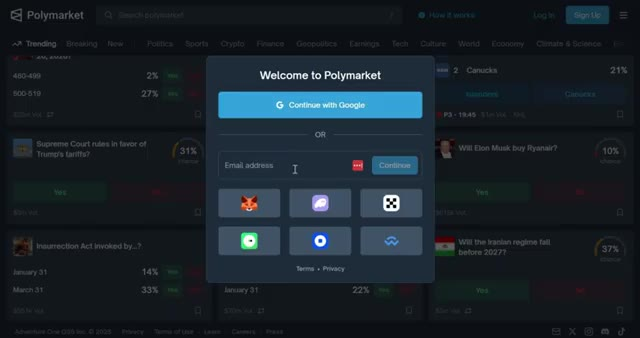
🔍 Agrandirprobabilité de transactions gagnantes. Restez donc jusqu'à la fin car je vais vous montrer de vrais exemples en direct de chaque stratégie et comment vous pouvez commencer à les utiliser dès aujourd'hui pour gagner de l'argent sur Polymarket. Commençons. Et d'ailleurs, si vous vous inscrivez en utilisant mon lien dans la description, vous pouvez gagner 10 dollars lorsque votre filleul effectue son premier dépôt. De plus, débloquez des primes massives, jusqu'à 1 000 dollars après avoir généré seulement 1 million de dollars de chiffre d'affaires.
Interface & Outils : Interface web de Polymarket (marchés de prédiction et page d'authentification).
Contenu textuel & Code : Listes de marchés politiques avec des pourcentages de probabilité (83%, 94%, 98%) et interface de connexion par e-mail ou portefeuille numérique.
Action / Démonstration : Navigation et démonstration des marchés de paris sur Polymarket suivies d'une illustration du processus d'inscription.
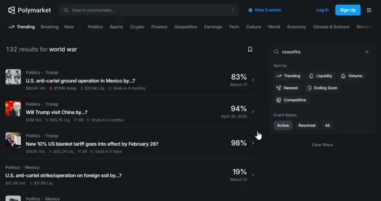
🔍 Agrandir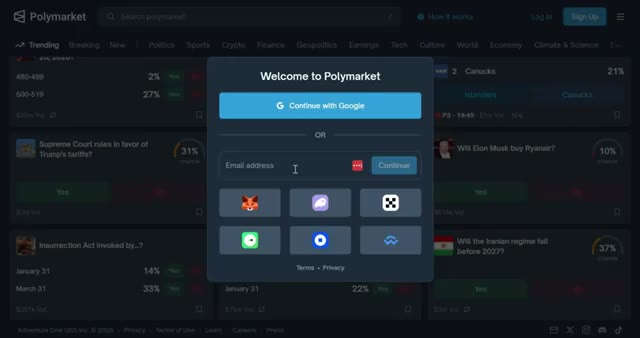
🔍 AgrandirLe lien est juste en dessous. Mais d'abord, allons vous inscrire sur Polymarket. Ça prend moins de deux minutes, mais il y a une étape cruciale que la plupart des débutants ratent et qui peut vous coûter de l'argent. Je vais vous montrer exactement comment éviter ça. Très bien, allons vous inscrire sur Polymarket. D'abord, cliquez sur le lien dans la description ci-dessous. Cela vous mènera directement à la page d'inscription de Polymarket.
Interface & Outils : Site web Polymarket
Contenu textuel & Code : Divers marchés de prédiction et cotes (ex: Super Bowl Champion 2026, Fed Chair, etc.) avec pourcentages et boutons "Yes/No".
Action / Démonstration : Navigation et présentation de la page d'accueil de la plateforme de prédiction Polymarket.
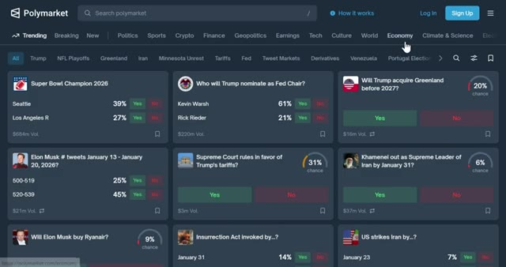
🔍 AgrandirVous verrez que vous pouvez continuer à utiliser votre compte Google ou en utilisant une autre adresse e-mail. Vous verrez également l'option pour connecter votre portefeuille. Polymarket est une plateforme décentralisée donc vous aurez besoin d'un portefeuille Web 3 comme MetaMask, Phantom, le portefeuille OKEx, le portefeuille Coinbase ou Wallet Connect. Pour ce tutoriel, je m'inscris en utilisant mon compte Google parce que c'est le moyen le plus rapide. Après cela, vous serez redirigé vers le tableau de bord de Polymarket. Maintenant que vous êtes connecté, vous devez déposer des fonds. En haut à droite, cliquez sur déposer. Polymarket fonctionne sur Polygon
Interface & Outils : Polymarket (Plateforme de prédiction décentralisée, navigateur Web)
Contenu textuel & Code : Fenêtre de connexion avec options de comptes (Google, Email) et icônes de portefeuilles Web3 (MetaMask, Phantom). Grille de marchés de prédiction avec volumes et pourcentages (ex: Super Bowl, Fed Chair, etc.).
Action / Démonstration : Présentation des différentes méthodes de connexion et de création de compte sur la plateforme Polymarket.
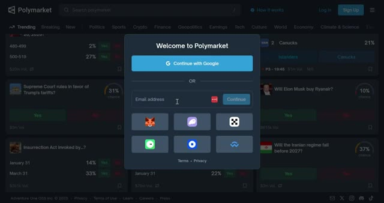
🔍 Agrandir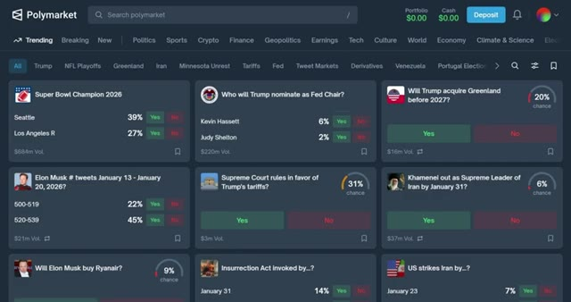
🔍 Agrandirréseau et utilise l'USDC comme devise principale. Vous avez quatre options ici. Transférer de la crypto, déposer par carte, connecter un échange et déposer avec PayPal. Si vous avez déjà de la crypto dans un autre portefeuille ou un autre échange, vous pouvez la transférer directement ou faire un pont depuis une autre chaîne. Commencez par sélectionner votre jeton. Vous verrez les jetons pris en charge comme l'USDC, l'ARB, le BNB, le BTCB, le Binance, l'USD, et plus encore. Ensuite, choisissez le réseau. Les réseaux disponibles incluent Ethereum, Solana, BSC, Base, Polygon et d'autres.
Interface & Outils : Polymarket (interface web de prédiction et de paris)
Contenu textuel & Code : Options de dépôt : "Transfer Crypto" (sans limite, instantané), "Deposit with Card" (limite 50 000 $, 5 min, logos Mastercard et Visa), "Connect Exchange" (sans limite, 2 min), "Deposit with PayPal" (limite 10 000 $, 5 min). Solde Polymarket actuel : 0,00 $.
Action / Démonstration : Présentation des différentes méthodes de dépôt pour approvisionner le compte Polymarket.
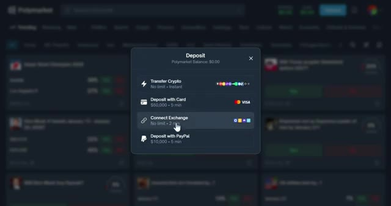
🔍 AgrandirC'est crucial. Assurez-vous que le réseau que vous sélectionnez correspond au réseau depuis lequel vous envoyez. Si vous envoyez des USDC sur Ethereum mais que vous sélectionnez Polygon, vos fonds seront perdus à jamais. Une fois sélectionné, scannez le code QR ou copiez l'adresse du portefeuille à l'aide du bouton de copie pour éviter les erreurs, puis collez-la dans votre portefeuille ou votre plateforme d'échange. Les fonds arrivent généralement en quelques minutes.
Interface & Outils : Polymarket (fenêtre de dépôt) et Bitunix (interface de retrait).
Contenu textuel & Code : Configuration du dépôt en USDC sur Solana, génération d'adresse, et interface de retrait Bitunix avec sélection du réseau et saisie de l'adresse.
Action / Démonstration : Copie de l'adresse de dépôt et configuration du transfert de crypto-monnaie.
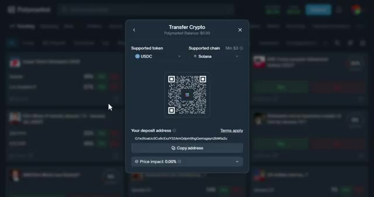
🔍 Agrandir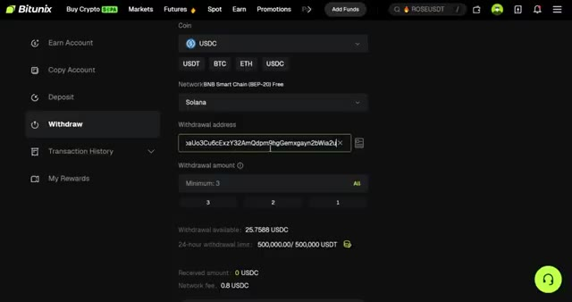
🔍 AgrandirTrès bien, passons à la première stratégie. J'appelle celle-ci « il ne se passe jamais rien ». La plupart des traders perdent parce qu'ils pensent que les grands titres comptent. Ils pensent que chaque rumeur est le début de la Troisième Guerre mondiale. Pendant ce temps, les professionnels connaissent la vérité. Il ne se passe jamais rien. 90 % du battage médiatique géopolitique se solde par des impasses, le silence, ou « on se retrouve jeudi prochain ». Les particuliers voient un titre et achètent rapidement du « oui ». Après avoir analysé, vous achetez stratégiquement du « non ». Voici pourquoi cela fonctionne.
Interface & Outils : Polymarket (plateforme de prédiction décentralisée)
Contenu textuel & Code : Marchés de prédiction avec pourcentages de probabilité (ex: 94%, 98%, 2%), volumes de transactions ($2M Vol), dates d'échéance et boutons de pari Oui/Non.
Action / Démonstration : Navigation et recherche sur la plateforme pour illustrer l'analyse des marchés de prédiction face aux rumeurs géopolitiques.
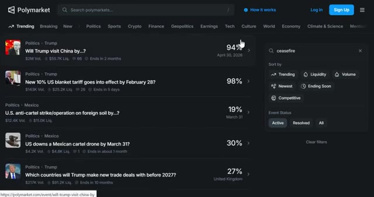
🔍 Agrandir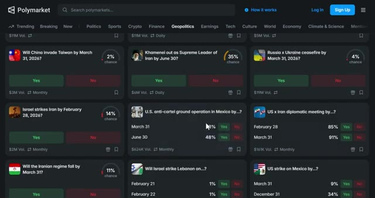
🔍 AgrandirLes grands titres émotionnels créent des pics de prix temporaires, mais les fondamentaux ne changent pas. Vous jouez contre la psychologie humaine, pas contre l'événement. Voici comment vous pouvez faire cela. Configurez des pièges d'alertes en temps réel sur X, Telegram ou Discord. Vous voulez que les accros à la dopamine travaillent pour vous. Chaque fois que le "oui" s'envole de 15 % en quelques heures, achetez du "non" instantanément. Chaque fois qu'une rumeur récurrente fait monter le "oui" pour la troisième, quatrième ou cinquième fois, vous chargez du "non". Chaque fois qu'un nouveau marché s'ouvre avec un prix du "oui" ridiculement bas, vous achetez du "non" tôt et vous le laissez redescendre à la réalité. Rendez votre sortie simple. Prenez 15 à 30 % de profit ou
Interface & Outils : Réseau social X (Twitter) et plateforme de prédiction Polymarket.
Contenu textuel & Code : Fil d'actualité, tweets, graphique de probabilité de marché avec des variations en pourcentage et panneau d'achat/vente (Buy/Sell).
Action / Démonstration : Navigation et présentation d'une interface de marché de prédiction illustrant la volatilité liée aux actualités géopolitiques.
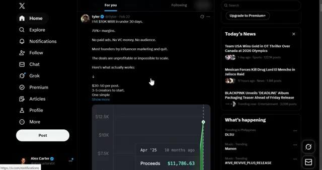
🔍 Agrandir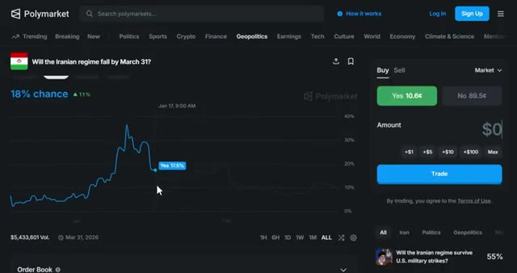
🔍 Agrandirattendez le retranchement complet. Et sortez toujours tôt si des preuves concrètes tombent. Vous vendez le battage médiatique, vous achetez l'ennui. Vous tradez la nature humaine. Comme vous pouvez le voir, ce marché a grimpé en flèche sur un titre. puis a lentement saigné à nouveau. Si vous avez acheté au moment du pic, vous avez gagné de l'argent facilement. La deuxième stratégie consiste à copier le trading de baleines rentables. Et pour cela, vous avez besoin de TradeFox. Certains portefeuilles sont des monstres, des rendements constants à sept chiffres. Ils ne devinent pas. Ils ont des systèmes, de l'arbitrage, des paires delta neutres, des flux de données, parfois de véritables initiés. Avec ces facteurs en place, vous ne pouvez pas
Interface & Outils : Polymarket (site web de marchés de prédiction)
Contenu textuel & Code : Graphique de probabilité montrant un pic à 25-30% suivi d'une baisse (Yes à 1.4¢, No à 98.8¢, volume total supérieur à 4,2 millions de dollars).
Action / Démonstration : Visualisation du graphique de prix d'un événement géopolitique reflétant le battage médiatique et sa baisse ultérieure (analyse de sentiment et de prix).
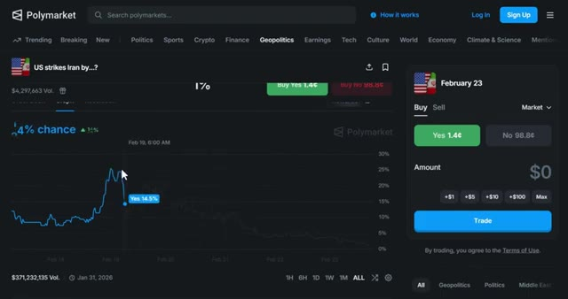
🔍 Agrandirbattez ces traders, mais vous pouvez les copier. TradeFox est le seul outil dont vous avez besoin pour cela. C'est un agrégateur de marchés de prédiction professionnel et une plateforme de copy trading spécialement conçue pour Polymarket. Voici ce qui rend TradeFox puissant. Vous pouvez automatiquement refléter les transactions des traders les plus performants avec des paramètres personnalisables. Vous pouvez définir des montants fixes par transaction ou utiliser des pourcentages. Par exemple, si une baleine parie 500 dollars, vous pouvez automatiquement parier 10 % de cela, soit 50 dollars. Vous pouvez définir des take profits, des stop losses et même des trailing stops pour protéger votre capital.
Interface & Outils : TradeFox (agrégateur de marchés de prédiction et plateforme de copy trading pour Polymarket)
Contenu textuel & Code : Graphiques de probabilités, carnets d'ordres, classement de traders avec métriques de profits et volumes, et paramètres de configuration de copy trading (fonds alloués, montants par trade).
Action / Démonstration : Navigation sur l'interface de TradeFox, consultation des marchés et configuration du copy trading.
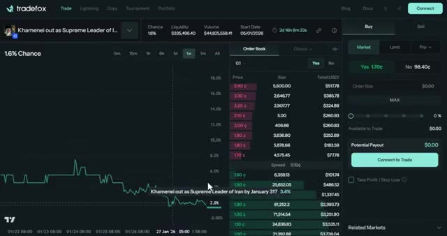
🔍 Agrandir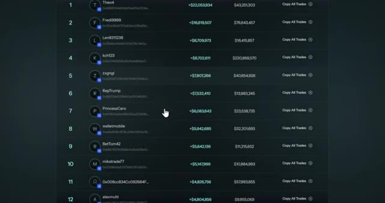
🔍 Agrandir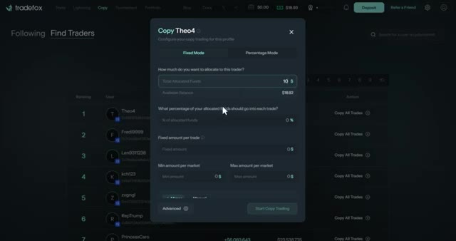
🔍 AgrandirTradefox suit les performances des traders en temps réel. Certains de ces gros investisseurs affichent des gains allant jusqu'à 8 000 %. Vous pouvez également coller manuellement des adresses de portefeuille si vous trouvez un gros investisseur que vous souhaitez copier en dehors de la plateforme. Voici comment procéder correctement. Pas de « all-in ». N'autorisez que des allocations de 1 % à 2 % par gros investisseur. Vous voulez 5 gros investisseurs maximum.
Interface & Outils : Plateforme de copy trading Tradefox
Contenu textuel & Code : Valeur totale du portefeuille (30,04 $), PnL global (+22 053 934,00 $), volume total (43 251 303,17 $), récompenses LP (1 712,84 $), graphique d'historique de PnL et tableau de l'historique des transactions.
Action / Démonstration : Consultation des performances et de l'historique des trades d'un investisseur spécifique sur Tradefox.
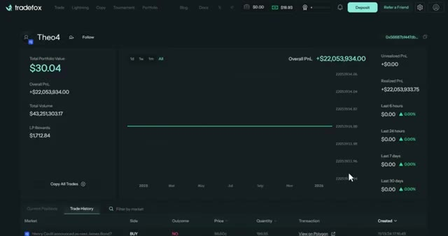
🔍 AgrandirCopiez-en trop et vous devenez un fonds indiciel. Votre travail est de rouler derrière eux sans devenir gourmand. Ayez une gestion des risques solide. Ne copiez jamais à 100 %. Gardez 60 à 70 % de votre bankroll pour vos propres trades. Arrêtez de copier n'importe quelle baleine après deux semaines consécutives de moins 20 %. Comme vous pouvez le voir, ces portefeuilles génèrent des rendements constants.
Interface & Outils : Plateforme de trading TradeFox (Interface de tournoi et de copy trading)
Contenu textuel & Code : Tableau de classement affichant les adresses des participants (ex: 0x3215...dA0e4C, 0x3E0E...0a2d99), le volume échangé (ex: $484,516.37), les variations sur 24h et les boutons "Follow" et "Copy Trades".
Action / Démonstration : Navigation et consultation du classement des meilleurs traders du tournoi TradeFox pour sélectionner les portefeuilles à copier.
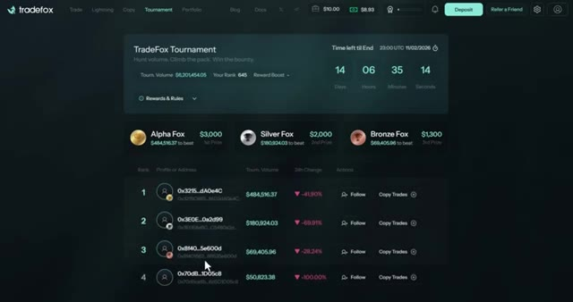
🔍 AgrandirTu n'essaies pas d'être plus intelligent qu'eux. Tu fais simplement suivre l'argent intelligent. TradeFox rend cela complètement automatisé. Tu le configures une seule fois et ça tourne en arrière-plan. Tu peux découvrir TradeFox via le lien ci-dessous. Et voici le meilleur. Si tu utilises mon lien TradeFox, tu peux gagner 35 % de tous les frais de tes filleuls directs, 10 % des filleuls de second degré et 5 % des filleuls de troisième degré.
Interface & Outils : Site web et interface de trading de la plateforme TradeFox
Contenu textuel & Code : Section "About" textuelle, graphique de prix pour XRP, carnet d'ordres (Order Book), options de type d'ordre (Market, Limit, Stop-Limit), soldes et gestion des positions.
Action / Démonstration : Navigation sur la documentation de la plateforme TradeFox puis affichage de l'interface de trading interactive avec le graphique et le carnet d'ordres.
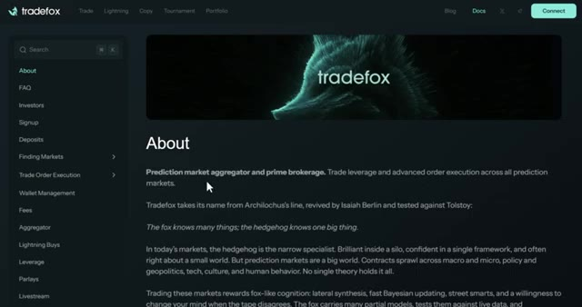
🔍 Agrandir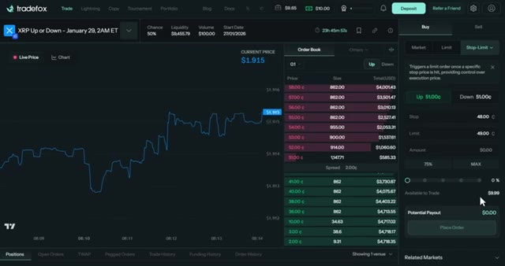
🔍 AgrandirDonc c'est un système de parrainage à trois niveaux, ce qui est assez dingue si vous partagez cela avec votre communauté. La stratégie numéro trois est le scalping d'actualités, ou ce que j'aime appeler acheter le titre, vendre le rebond. C'est pour les traders qui sont chroniquement en ligne. Quand une nouvelle de dernière minute tombe, le momentum explose avant que quiconque ne comprenne ce qui se passe. Si vous êtes rapide, vous surfez sur la première vague. Si vous êtes en retard, vous devenez de la nourriture pour les baleines. Voici l'action que vous pouvez réellement faire. Dès qu'un titre à fort impact tombe, tel qu'une annonce de Trump, une décision de la Fed, un cessez-le-feu, de nouveaux tarifs douaniers, un scandale politique de dernière minute, vous achetez alors le côté qui s'envole. Vous n'avez pas besoin de trop réfléchir. Le momentum l'emporte sur la logique.
Interface & Outils : Polymarket (Plateforme de prédiction décentralisée)
Contenu textuel & Code : Liste de marchés de prédiction classés par catégories (Trending, Politics, Tech, etc.), volumes de transaction (ex: $371M Vol.), pourcentages de probabilité (ex: 85% chance) et interface de trading (options Yes/No).
Action / Démonstration : Navigation à travers les marchés tendance et sélection d'un événement spécifique lié à une actualité technologique pour illustrer le scalping d'actualités.
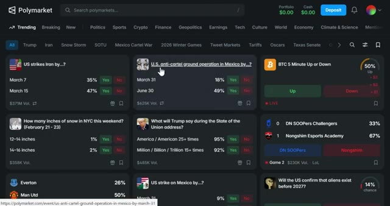
🔍 Agrandir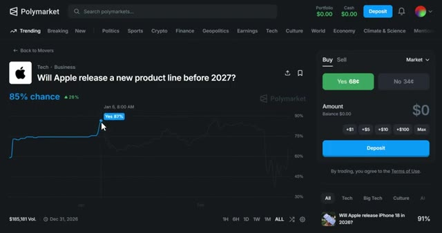
🔍 AgrandirEnsuite, vous revendez aux acheteurs paniqués en quelques minutes. Cette stratégie repose sur la vitesse pure. Les 30 premières secondes comptent. Si vous êtes en retard, ne courez pas après le cours. Vous vendez avant que le carnet d'ordres ne s'amincisse. L'argent se fait avant l'arrivée des investisseurs particuliers. Regardez ça. Le marché a bondi de 77 % dans la première minute, puis a lentement reflué. Si vous avez acheté au moment du pic et vendu cinq minutes plus tard, vous avez fait 70 à 75 % en quelques minutes. C'est ce qui se rapproche le plus de l'adrénaline du day trading que vous trouverez sur la chaîne.
Interface & Outils : Plateforme de prédiction Polymarket (site web)
Contenu textuel & Code : Listes de marchés de prédiction ("Breaking News"), pourcentages de probabilité (ex: 100%, 84%, 90%), graphiques d'évolution des chances, volume de transactions ($694,452 Vol.).
Action / Démonstration : Navigation sur la plateforme Polymarket et visualisation d'un graphique de probabilité de marché pour illustrer la rapidité des mouvements de prix et la réactivité nécessaire.
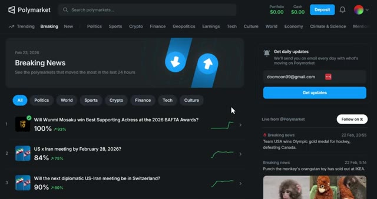
🔍 Agrandir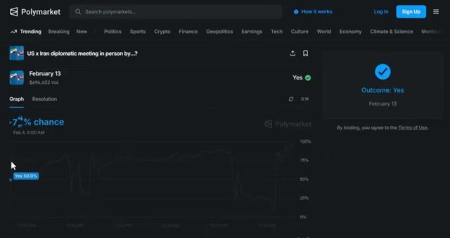
🔍 AgrandirLa stratégie numéro quatre est le trading basé sur la personnalité. Certaines personnes parlent trop. Certains politiciens font des monologues d'une heure et répètent des phrases six fois. D'autres politiciens font des déclarations de 12 minutes avec des prompteurs et zéro surprise. Cette prévisibilité est un avantage. Voici la stratégie. Pariez oui sur les mentions prévisibles lors de longs discours ou pariez non lorsque l'orateur est contrôlé, scripté, ou peu susceptible de s'écarter du texte. Vous tradez le comportement humain, pas la politique. Les événements dont la durée est prévue de longue date et qui présentent des enjeux émotionnels élevés sont des mines d'or parce que
Interface & Outils : Polymarket (plateforme de prédiction décentralisée)
Contenu textuel & Code : Marchés de prédiction politique, pourcentages de probabilité, volumes de transaction ($33,861, $23.8K, etc.), boutons d'achat "Yes" et "No" avec leurs prix en centimes, filtres de recherche.
Action / Démonstration : Navigation et consultation de différents marchés de prédiction politique sur la plateforme Polymarket en lien avec le comportement et les déclarations de politiciens.
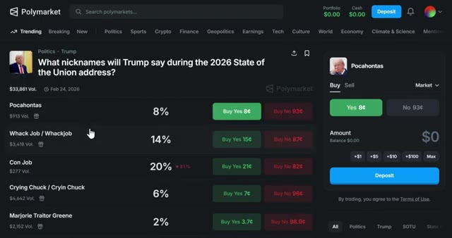
🔍 Agrandir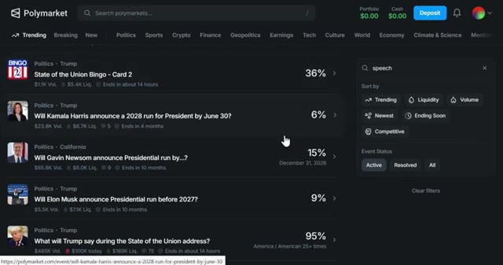
🔍 AgrandirLes gens oublient les schémas des orateurs et parient de manière émotionnelle au lieu de le faire de façon statistique. Par exemple, le discours du président américain Donald Trump avait un marché de prédiction. Qu'allait dire Trump au Sommet de l'énergie et de l'innovation le 15 juillet ? Oui, le fait qu'il dise millions, milliard ou billion se négociait à 30,5 cents. Le discours a duré plus de deux heures, et il l'a mentionné 15 fois. Oui, résolu, ce qui donne près de 70 pour cent de profit. Vous ne prédisez pas la politique. Vous prédisez la personnalité.
Interface & Outils : Polymarket et YouTube
Contenu textuel & Code : Marché de prédiction Polymarket avec le marché « What will Trump say at the Energy and Innovation Summit on July 15? », affichant le volume ($256,347 Vol.), les probabilités sous forme de graphique linéaire, et des marchés associés dans la barre latérale droite.
Action / Démonstration : Présentation d'un marché de prédiction Polymarket illustrant comment les utilisateurs parient sur des événements spécifiques basés sur les discours politiques.
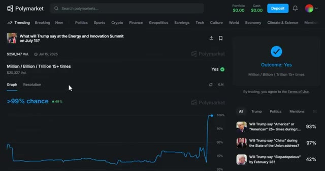
🔍 AgrandirLa stratégie numéro cinq concerne spécifiquement les baisses de taux de la Fed. La Réserve fédérale annonce tout à l'avance. Ils vous préviennent dans des discours. Ils font des fuites par l'intermédiaire de leurs journalistes préférés. Ils publient des comptes rendus. Ils disent en gros, nous allons baisser les taux le mois prochain. Pourtant, d'une manière ou d'une autre, les marchés se trompent encore dans leurs prix. Les voix clés à suivre sont Jerome Powell, John C. Williams, Philip Jefferson, Christopher Waller, et surtout Nick Timiraos du Wall Street Journal, le messager non officiel de la Fed.
Interface & Outils : Site web officiel de la Réserve fédérale (Federal Reserve) et outil CME FedWatch.
Contenu textuel & Code : Données de probabilités de taux (Ease: 4.1%, No Change: 95.9%, Hike: 0.0%) et calendrier des réunions du FOMC.
Action / Démonstration : Navigation sur les sites officiels pour illustrer les annonces et prévisions de taux de la Fed.
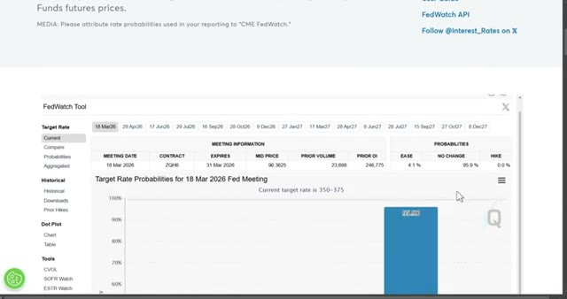
🔍 AgrandirVotre travail consiste à lire ces signaux plus rapidement que les particuliers en suivant leurs discours sur federalreserve.gov, en regardant Timur House sur X, en vérifiant CME FedWatch pour repérer le moment où les probabilités du marché prennent du retard par rapport au nouveau narratif. Lorsque la banque centrale fait allusion à un mouvement, vous tradez avant la réévaluation.
Interface & Outils : Navigateur web affichant federalreserve.gov, X (anciennement Twitter), et l'outil CME FedWatch.
Contenu textuel & Code : Filtres de recherche de communiqués de presse, publications de Nick Timiraos sur X, graphique en barres des probabilités de taux directeurs (95.9% pour 350-375 bps et 4.1% pour 325-350 bps).
Action / Démonstration : Navigation et consultation de sources officielles, de fils d'actualités sur les réseaux sociaux et d'outils de probabilités de marché pour analyser les anticipations de taux.
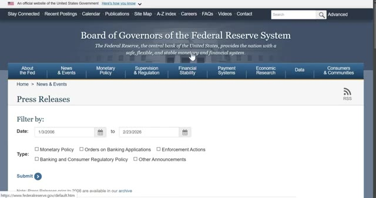
🔍 Agrandir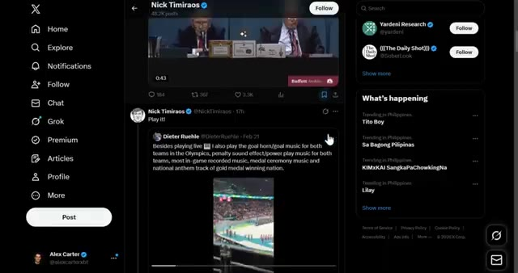
🔍 Agrandir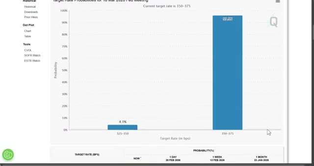
🔍 AgrandirÇa fonctionne parce que les investisseurs particuliers sous-estiment à quel point les marchés s'ajustent lentement aux actualités macroéconomiques ennuyeuses. La liquidité n'est pas instantanée. Les prix ont un temps de retard. Vous tradez ce temps de retard et vous encaissez. Maintenant, avant de tout miser sur Polymarket, il y a quelques erreurs critiques que vous devez éviter. Laissez-moi vous montrer comment vous protéger. Très bien, parlons gestion des risques parce que c'est là que la plupart des débutants grillent leurs comptes. Conseil numéro un, lisez toujours les règles. Je n'insisterez jamais assez là-dessus. Les règles sont primordiales. Si vous ne lisez pas les règles, vous jouez. Si vous lisez les règles, vous tradez. Conseil numéro deux, commencez petit. Ne
Interface & Outils : Polymarket (Plateforme de marchés de prédiction décentralisée)
Contenu textuel & Code : Graphiques de probabilités, volumes de transaction, options d'achat/vente (Buy/Sell Yes/No), pourcentages de prédiction et montants en jeu.
Action / Démonstration : Navigation et consultation de marchés macroéconomiques et politiques sur une plateforme de prédiction.
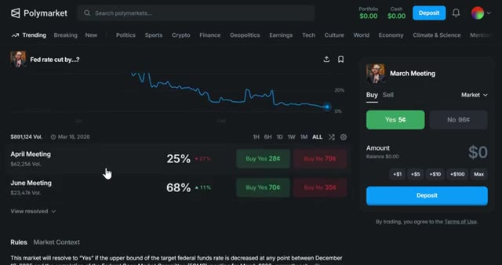
🔍 Agrandir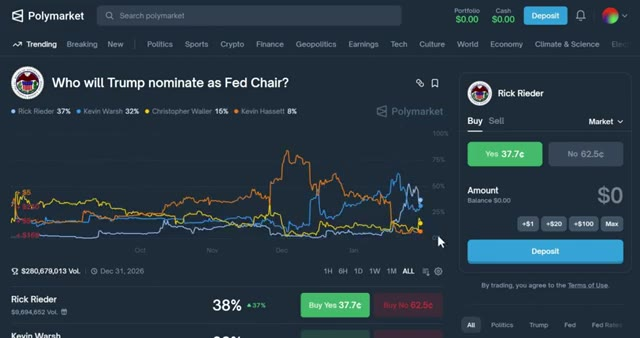
🔍 Agrandirallez-y à fond sur votre premier trade. Commencez avec 10 à 20 dollars et apprenez à vous familiariser avec le fonctionnement de la plateforme. Une fois que vous êtes à l'aise, vous pouvez augmenter la mise. Conseil numéro trois, diversifiez vos trades. Ne mettez pas tout votre argent sur un seul marché. Répartissez-le sur plusieurs opportunités de gains garantis. De cette façon, même si un trade tourne mal, vous restez globalement rentable. Conseil numéro quatre, suivez vos trades. Tenez un simple tableur de chaque trade que vous effectuez. Notez le marché, la cote à laquelle vous avez acheté, les règles et le résultat. Cela vous aidera à identifier des tendances et à vous améliorer avec le temps.
Interface & Outils : Polymarket, Google Sheets
Contenu textuel & Code : Interface de trading de Polymarket avec choix d'options 'Yes'/'No', montants et soldes de portefeuille, ainsi qu'un tableur pour organiser les paris.
Action / Démonstration : Navigation sur la plateforme de paris prédictifs Polymarket et organisation des différentes catégories de trades.
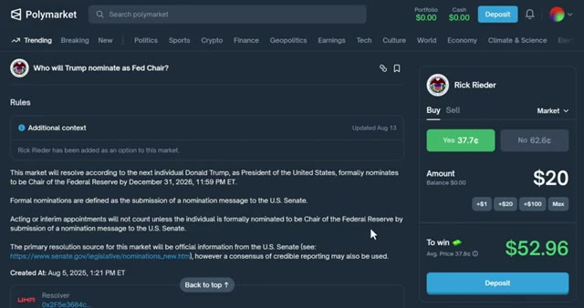
🔍 Agrandir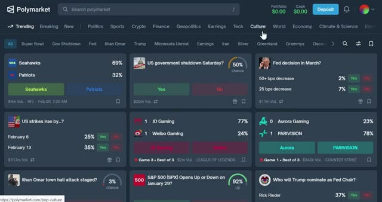
🔍 Agrandir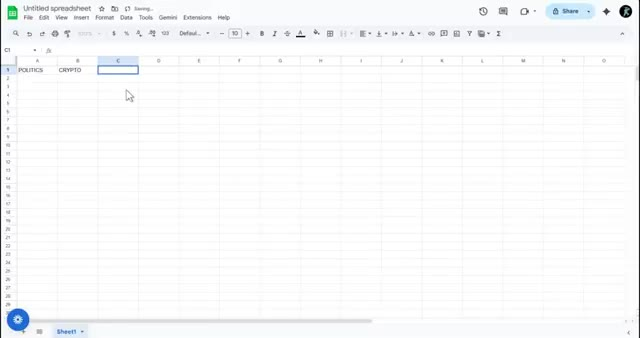
🔍 AgrandirJe vais également sortir d'autres vidéos sur le trading et les marchés de prédiction concernant les stratégies Polymarket avancées, y compris les parties deux et trois de cette série. Assurez-vous donc de vous abonner et de cliquer sur l'icône de cloche pour ne pas les rater. Et si vous voulez automatiser votre copy trading et suivre les baleines, allez voir Tradebox. C'est le seul outil que j'utilise pour le copy trading sur Polymarket.
Interface & Outils : Interface web de Polymarket (marchés de prédiction décentralisés).
Contenu textuel & Code : Pourcentages de probabilité des différents événements, graphiques d'évolution temporelle des prix (ex: 37% de chance), carnets d'ordres et options de trading (boutons d'achat/vente Oui/Non).
Action / Démonstration : Navigation et présentation des marchés de prédiction et des graphiques de probabilités sur Polymarket.
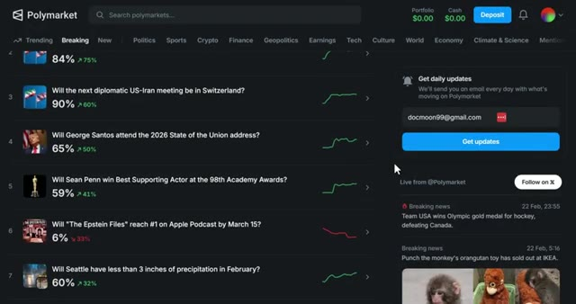
🔍 Agrandir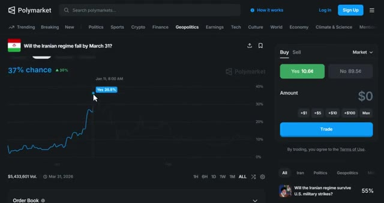
🔍 AgrandirLe lien est dans la description si vous avez trouvé cette vidéo utile, laissez un pouce bleu en bas si vous avez des questions, posez-les dans les commentaires et je répondrai à chacune d'elles, et si vous voulez un guide complet sur le fonctionnement de la plateforme Polymarket, regardez la vidéo qui s'affiche à l'écran dès maintenant, merci d'avoir regardé et je vous dis à la prochaine.
Interface & Outils : Site web de Polymarket (plateforme de marchés de prédiction).
Contenu textuel & Code : Divers marchés de prédiction (Seahawks vs Patriots, US government shutdown, Fed decision, etc.) avec leurs pourcentages de probabilité et volumes.
Action / Démonstration : Navigation et présentation de l'interface d'accueil de la plateforme de prédiction Polymarket.
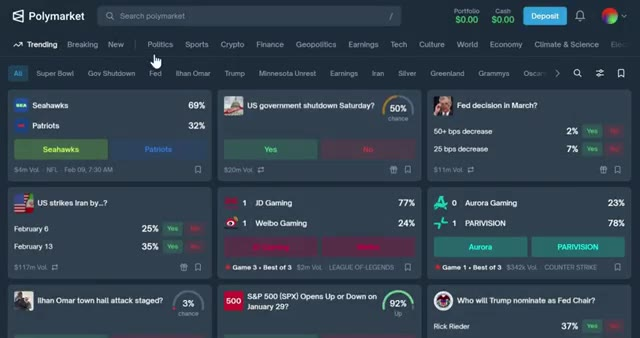
🔍 Agrandir